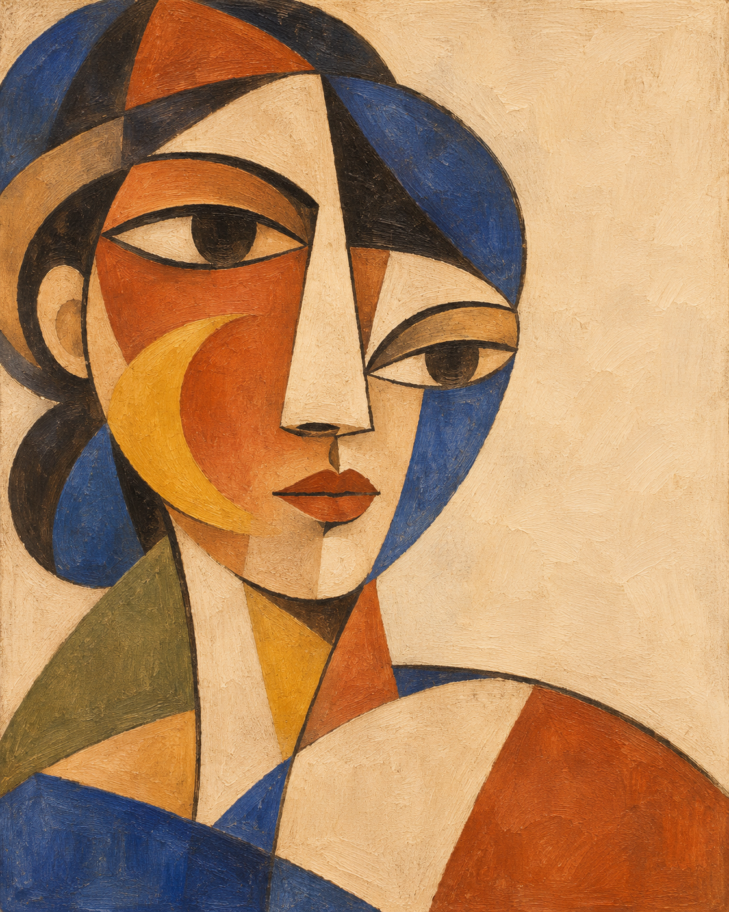
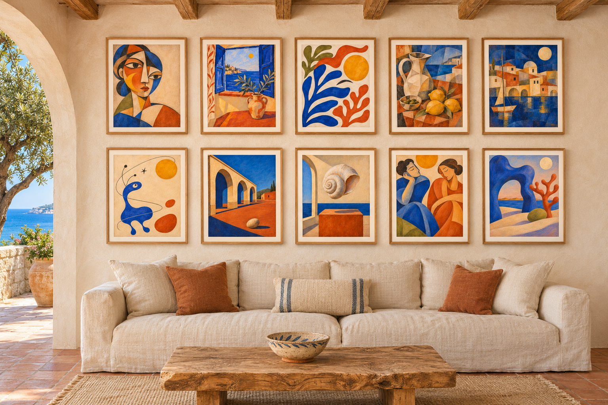

Una collezione originale · 2026
Il Mediterraneo
come un sogno.
Dieci visioni pittoriche nate tra luce, memoria e materia. Un atlante intimo di forme mediterranee, sospese tra il reale e l'immaginato.
Esplora le opere
ritratto · 2026
Un paesaggio
interiore.
“Sogni di Mediterraneo” è una serie di dieci immagini originali che attraversa cubismo, fauvismo e surrealismo con una tavolozza di avorio calce, cobalto, terracotta, ocra e verde oliva.
Volti, finestre, porti, archi e conchiglie diventano frammenti di una stessa geografia immaginaria: luminosa, quieta, profondamente terrestre.
Tre modi di
guardare il mare.
Una selezione per entrare nella serie: il volto, il gesto, la visione.
Dieci frammenti
dello stesso blu.
opere originali
La pittura
trova casa.
Una parete di calce, il legno antico, il mare oltre l'arco. Il mockup immagina la collezione nel suo paesaggio naturale: una casa mediterranea dove le opere respirano insieme.
Ritorna alla collezione
Portare il mare
con sé.
Una serie da attraversare lentamente.
Torna su ↑